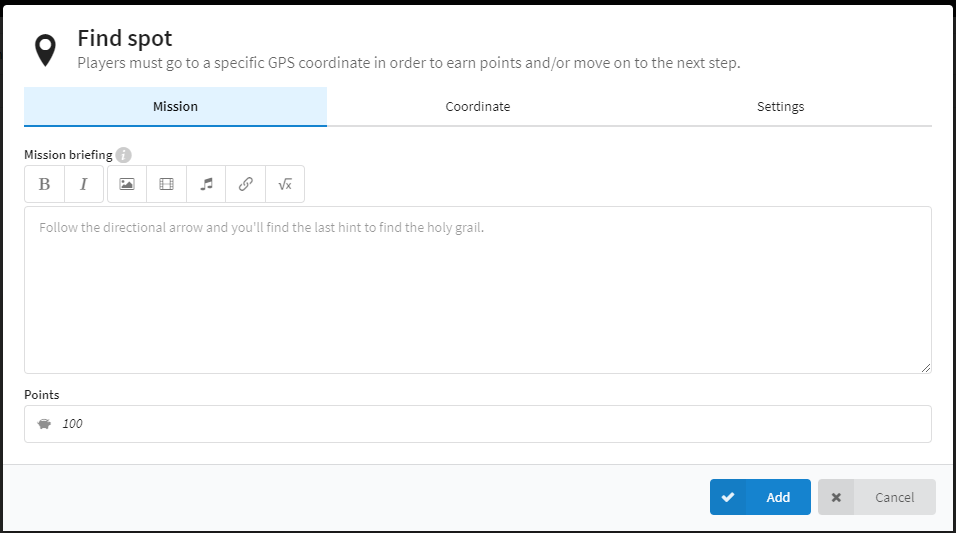
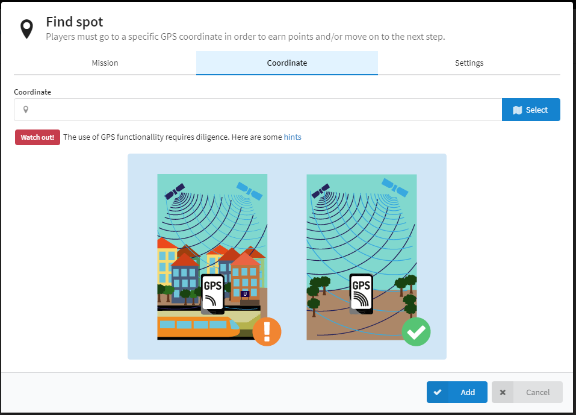
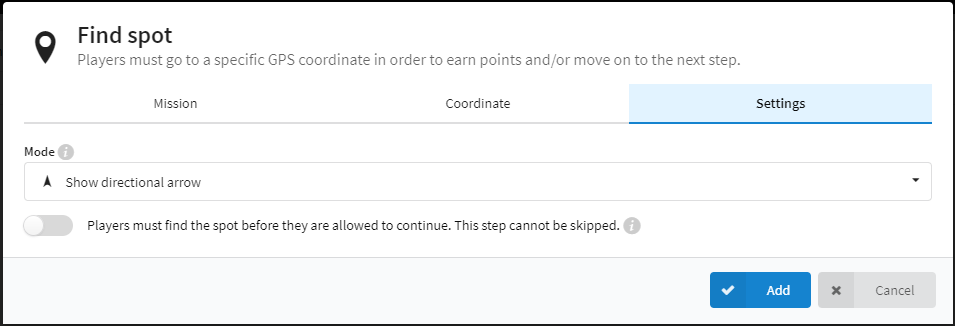

Hoe gebruik ik Actionbound? (FindPlace)
-

Findplace aanmaken stap 1
Hier kan u een beschrijving met eventuel fotos toevoegen over de plaats die ze moeten vinden. U kan ook ingeven hoeveel punten de deelnemer zal krijgen als ze juist antwoorden. -

Findplace aanmaken stap 2
Als u bovenaan op "coordinaten" drukt kan u de plaats op de map aanduiden. -

Findplace aanmaken stap 3
Als u bovenaan op "instellingen" drukt kan u de instellingen van deze opdracht veranderen. Bij mode kan u ervoor kiezen om de richting of de map te tonen. U kan er ook voor kiezen de deelnemers niet verder te laten gaan met de bound tenzij ze deze plaats vinden.